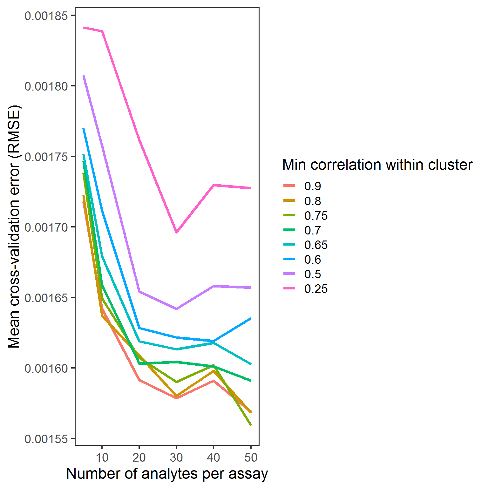

V_JDRF_3_resample_cross_validation.RmdResampling / cross-validation
## Supervised task: mlr.Data
## Type: regr
## Target: cpep_model_decayrate
## Observations: 31
## Features:
## numerics factors ordered functionals
## 76746 0 0 0
## Missings: TRUE
## Has weights: FALSE
## Has blocking: FALSE
## Has coordinates: FALSElrn.glmnet.1.orig<-makeLearner(cl= "regr.cvglmnet", par.vals = list(alpha=1, s='lambda.min') ) # s will be override, so value does not matter. if not specified, mlr will assign s=0.01
lrn_PreProcess_glmnet<-Fun_lrn_univ_Clusters_All_makePrep_MaG(lrn.glmnet.1.orig,
train_F = F_PreProc_3_UnivClust_Train_MaG,
Predict_F = F_PreProc13_BOTH_Predict_MaG,
param.Univ.filt.top.n.features = NA,
param.UnivClustRankTopN = NA,
param.cluster_method_KH = NA,
param.corrplot.n.clusters.k = NA,
param.corrplot.n.clusters.h = NA,
parame.gene.or.module = NA,
param.LASSO.n.features.arbitrary=NA)
Assay.Analyte.sep<-'.ZZZ.'
is.numeric(param.impute.knn.k<-20) ## [1] TRUEparam.assay.type.vec<-c('Short', 'Long', 'Short', 'Short', rep('Long', 11))
lrn_PreProcess_glmnet$par.vals[['param.assay.type.vec']]<-param.assay.type.vec
lrn_PreProcess_glmnet$next.learner$properties %<>% c(., 'missings') # ok to add only because
lrn_PreProcess_glmnet## Learner regr.cvglmnet.preproc from package glmnet
## Type: regr
## Name: ; Short name:
## Class: PreprocWrapper
## Properties: numerics,factors,missings,weights
## Predict-Type: response
## Hyperparameters: alpha=1,s=lambda.minargs_1<-list(
param.Univ.filt.top.n.features = 30,
param.UnivClustRankTopN = 1,
param.cluster_method_KH = 'method.h',
param.corrplot.n.clusters.k = 10,
param.corrplot.n.clusters.h = 0.3,
parame.gene.or.module = 'gene',
param.LASSO.n.features.arbitrary = 5)
lrn_1<-Func_update_args_univ_clusters(lrn = lrn_PreProcess_glmnet, args_vec = args_1, lrn.id = 'lrn1') ## 0. setup
param.LASSO.n.features.arbitrary<-6
h_seq<-c(0.1, 0.2, 0.25, 0.3, 0.35, 0.4, 0.5, 0.75); top_h_sqe<-c(5, 10, 20, 30, 40, 50)
bmr_tib_setup<-expand.grid(hclust_cutree_h = h_seq, Univ_top_n = top_h_sqe) %>% as.matrix %>% as_tibble
bmr_tib_setup %<>%
mutate(args_vec_i = map2(Univ_top_n, hclust_cutree_h, ~list(.x, 1, 'method.h', 0, .y, 'gene', param.LASSO.n.features.arbitrary)) ) %>%
mutate(lrd_ID_i = paste0('lrn_', 1:n())) %>%
mutate(lrn_i = map2(args_vec_i, lrd_ID_i, ~Func_update_args_univ_clusters(lrn = lrn_PreProcess_glmnet, args_vec = .x, lrn.id = .y)))
lrn_featureless<-makeLearner(cl='regr.featureless')
rmse_null<-train(lrn_featureless, task_j) %>% predict(task_j) %>% performance(rmse)
if(FALSE){
bmr_tib_setup %<>%
# slice(1:1) %>%
mutate(Resample = lrn_i %>% map(~resample(.x, task_j,
resampling = makeResampleDesc("Subsample", iter = 5, predict = 'both', split = 0.8),
measures = list(rmse),
models = FALSE, extract = function(x) getLearnerModel(x) %>% getLearnerModel %>% coef %>% tidy %>% nrow )))
}
# save(bmr_tib, file = 'data/bmr_tib.rdata')
# load( file = 'data/bmr_tib.rdata') # bmr_tib
# pre-saved:
bmr_tib_setup<-bmr_tib
##################################################################
# out<-bmr_tib_setup$Resample[[1]]$models[[1]]
# out$learner.model$next.model$learner.model %>% coef %>% tidy %>% nrow
# bmr_tib_setup$Resample[[1]]$extract[[1]]$learner.model %>% coef %>% tidy %>% nrow
## Add n_coef from extract
bmr_tib_setup %<>%
mutate(n_coef_from_extract = Resample %>% map('extract'))
# bmr_tib_setup %<>% mutate(n_coef_from_model = Resample %>% map_int(~.x$model$learner.model$next.model$learner.model %>% coef %>% tidy %>% nrow))
# bmr_tib_setup$n_coef_from_extract
## extract AVG_rmse
bmr_tib_setup %<>%
mutate(rmse_h_n_vec = Resample %>% map('measures.test') %>% map(~.x %>% pull(rmse)) ) %>%
mutate(rmse_h_n_mean = rmse_h_n_vec %>% map_dbl(~.x %>% mean) )
# plot(bmr_tib_setup$n_coef_from_extract %>% unlist, bmr_tib_setup$rmse_h_n_vec %>% unlist); abline(h = rmse_null, col='red')
## Diagnostics RMSE distributions > rmse_null
# bmr_tib_setup %<>% mutate(rmse_h_n_vec_vs_REF = rmse_h_n_vec %>% map(~(.x >rmse_null) %>% table) )
#.x = bmr_tib_setup$rmse_h_n_vec[[1]]
# bmr_tib_setup$rmse_h_n_vec_vs_REF
# bmr_tib_setup$rmse_h_n_vec %>% bind_cols %>% boxplot; abline(h=rmse_null, col='red')#stats_disp_df<-read.csv('Z:/R_rhino/JDRF_paper/data/RMSE_benchmarking.csv') # Sam's past results
#DF_both2<-rbind(DF_rmse, data.frame(stats_disp_df %>% select(hclust_cutree_h = corrplot.n.clusters, Univ_top_n = feature.n, rmse = RMSE_mean), s_opt = 'Sam'))
bmr_tib_plot<-bmr_tib_setup %>%
select(Univ_top_n, hclust_cutree_h, rmse_h_n_mean) %>%
mutate(hclust_cutree_h = as.factor(1-hclust_cutree_h) %>% forcats::fct_rev() )
# filter(hclust_cutree_h == param.corrplot.n.clusters.h) %>%
bmr_tib_plot %>% ggplot() +
geom_line(aes(x = Univ_top_n, y = rmse_h_n_mean, color = hclust_cutree_h), size = 1.5) +
scale_y_continuous(breaks = pretty(c(bmr_tib_plot$rmse_h_n_mean, rmse_null), n = 6)) +
theme_bw(base_size = 18) +
theme(panel.grid.major = element_blank(), panel.grid.minor = element_blank()) +
ylab('Mean cross-validation error (RMSE)') +
xlab('Number of analytes per assay') +
labs(color = "Min correlation within cluster") 
## B.2: automatic via mlr::benchmark(). However, no manual control for s.
# benchmark's default require some additional nested resampling. here will force test to be the same 100% train
## prediction by default is done here with the learner's original s
# bmr_CV<-benchmark(bmr_tib_setup$lrn_i, task_j, resamplings = makeResampleDesc("Subsample", iter = 100, predict = 'both', split = 0.8), measures = list(rmse))## R version 3.5.0 (2018-04-23)
## Platform: x86_64-w64-mingw32/x64 (64-bit)
## Running under: Windows 10 x64 (build 14393)
##
## Matrix products: default
##
## locale:
## [1] LC_COLLATE=English_United States.1252
## [2] LC_CTYPE=English_United States.1252
## [3] LC_MONETARY=English_United States.1252
## [4] LC_NUMERIC=C
## [5] LC_TIME=English_United States.1252
##
## attached base packages:
## [1] stats graphics grDevices utils datasets methods base
##
## other attached packages:
## [1] bindrcpp_0.2.2 knitr_1.21 JDRFCAV_0.1.0
## [4] impute_1.54.0 limma_3.36.1 biobroom_1.12.0
## [7] broom_0.5.0 glmnet_2.0-16 foreach_1.4.4
## [10] Matrix_1.2-14 mlrCPO_0.3.4 mlr_2.13.9000
## [13] ParamHelpers_1.12 magrittr_1.5 forcats_0.3.0
## [16] stringr_1.3.1 dplyr_0.7.8 purrr_0.2.5
## [19] readr_1.1.1 tidyr_0.8.2 tibble_2.0.1
## [22] ggplot2_3.1.0 tidyverse_1.2.1
##
## loaded via a namespace (and not attached):
## [1] Biobase_2.40.0 httr_1.4.0 jsonlite_1.6
## [4] splines_3.5.0 modelr_0.1.2 assertthat_0.2.0
## [7] cellranger_1.1.0 yaml_2.2.0 pillar_1.3.1
## [10] backports_1.1.3 lattice_0.20-35 glue_1.3.0
## [13] digest_0.6.18 checkmate_1.9.1 rvest_0.3.2
## [16] colorspace_1.4-0 htmltools_0.3.6 plyr_1.8.4
## [19] XML_3.98-1.16 pkgconfig_2.0.2 haven_1.1.2
## [22] scales_1.0.0 parallelMap_1.4 withr_2.1.2
## [25] BiocGenerics_0.26.0 lazyeval_0.2.1 cli_1.0.1
## [28] survival_2.41-3 crayon_1.3.4 readxl_1.1.0
## [31] memoise_1.1.0 evaluate_0.12 fs_1.2.3
## [34] nlme_3.1-137 MASS_7.3-49 xml2_1.2.0
## [37] tools_3.5.0 data.table_1.12.0 hms_0.4.2
## [40] BBmisc_1.11 munsell_0.5.0 compiler_3.5.0
## [43] pkgdown_1.3.0 rlang_0.3.1 grid_3.5.0
## [46] iterators_1.0.10 rstudioapi_0.7 labeling_0.3
## [49] rmarkdown_1.11 Bioc2mlr_0.1.0 gtable_0.2.0
## [52] codetools_0.2-15 roxygen2_6.1.1 R6_2.3.0
## [55] lubridate_1.7.4 bindr_0.1.1 fastmatch_1.1-0
## [58] commonmark_1.5 rprojroot_1.3-2 desc_1.2.0
## [61] stringi_1.2.4 parallel_3.5.0 Rcpp_1.0.0
## [64] tidyselect_0.2.5 xfun_0.4